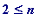

Introduction
This Maple worksheet is based on a reading of Michael Kleber's wonderful article The Best Card Trick ( Mathematical Intelligencer , Volume 24, Number 1, 2002; that article is available in various formats from MK's web site: there's a link from my site). If you haven't read MK's article then you should do so before reading below.
I would like to acknowledge that MK pointed out a foolish error in my original presentation (in short, the generalised trick is even better than I realised...)
The 'best card trick' is: choose any 5 cards from a 52-card pack (in the US 'deck'?), pass them to 'my beautiful assistant', who then passes just 4 of them to me, whereupon I tell you the 5th, hidden card. Magic!! It was the creation of William Fitch Cheney, Jr., the first mathematics PhD graduate (1927) from MIT. MK explains that the trick may be performed not just with a 52-card pack, but in fact with one having as many as 124 cards. The '124' is 5!+5-1, and, in general, - where
n
(
 ) cards are chosen - one may perform the trick with a maximum of
n
!+
n
-1 cards.
) cards are chosen - one may perform the trick with a maximum of
n
!+
n
-1 cards.
My aim is to flesh out MK's explanation (due to Elwyn Berlekamp) of the ( n !+ n -1) generalisation, that generalisation being as follows: let n be any whole number (  ), and let there be three persons
Remarkable! How is it done?
How is it done?
The detail